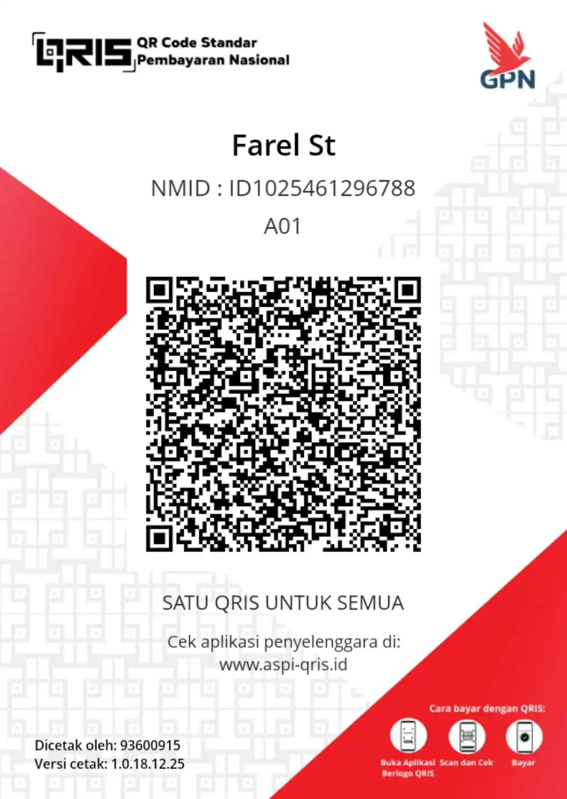

Kenapa Donasi?
Dukunganmu membantu Karbit Prime tetap aktif, lebih rapi, dan terus berkembang tanpa membuat website terasa berat atau penuh iklan.
Dukunganmu membantu domain, hosting, penyimpanan, pengembangan website, testing, dan kebutuhan operasional lain agar website tetap aktif dan terus berkembang.
Dukunganmu membantu Karbit Prime tetap aktif, lebih rapi, dan terus berkembang tanpa membuat website terasa berat atau penuh iklan.
Dipakai untuk domain, hosting, penyimpanan, pengembangan website, testing tools, dan kebutuhan operasional agar update tetap stabil.
Kamu bisa mendukung lewat Trakteer, scan QRIS, atau menghubungi admin langsung untuk tanya dan konfirmasi donasi.
Scan QRIS di bawah ini menggunakan e-wallet atau mobile banking yang mendukung pembayaran QRIS.

Scan QRIS di atas untuk mendukung update, pengembangan, dan kelangsungan Karbit Prime. Terima kasih atas dukunganmu.
Pilih metode yang paling nyaman. Setiap dukungan, besar maupun kecil, sangat berarti untuk Karbit Prime.